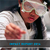
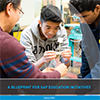
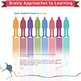
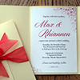
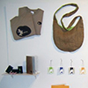

Rochelle Hickey Design
I design because I love to, not because I have to, and that means everything.
I don’t bite, so contact me about any exciting project(s) you have or any questions you would like answered. Be warned, questions regarding topics other than design will still be answered, but the accuracy may be a bit fuzzy.
- email send me a message
- linkedin view my profile
- résumé click here to view/download
Portfolio
-

Jobs for the Future: Impact Report 2014
The Jobs for the Future Impact Report highlights JFF's social and economic accomplishments across the nation in 2014. It charts the progress of young people who are on the path to college success, adults who earn a labour market credential, and adults who go on to a family-supporting career.
-

A Blueprint for SAP Education Initiatives
An education blueprint from BTECH (Business Technology Early College High School) in Queens, NY, the first SAP education initiative in the United States, with how they, along with other schools, brought STEM into the classroom.
-
National Fund for Workforce Solutions 5th Annual Meeting: Learn. Share. Partner.
National Fund for Workforce Solutions 5th Annual meeting program booklet includes information about the National Fund, the agenda for the three day conference, employer and frontline champion biographies, and biographies of conference attendies.
-

Brainy Approaches to Learning Infographic
Based on research from Mind, Brain, and Education: A Students at the Center Series publication, this infographic highlights student-centered approaches to learning.
-

Wedding Invitations
Wedding invitations designed to match the personality of the bride and groom.
-

Potato Frog Protection Society
Potato products are in every grocery store nation-wide and is the fourth main staple of food for the world, the first being rice. Potatoes are grown in 44 countries and all have one thing in common; the Potato Frog. Potato Frogs are being killed by the ten of thousands each year, and as they are being destroyed, potato crops have been on the decline.